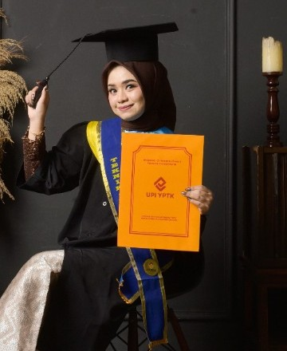
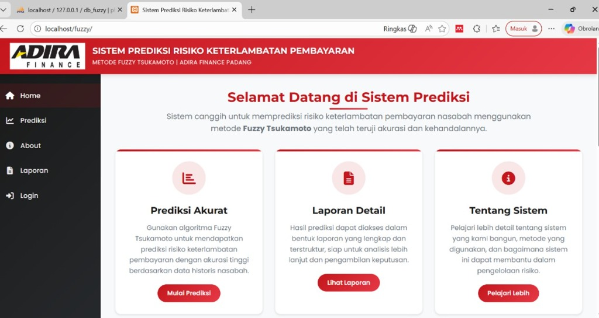
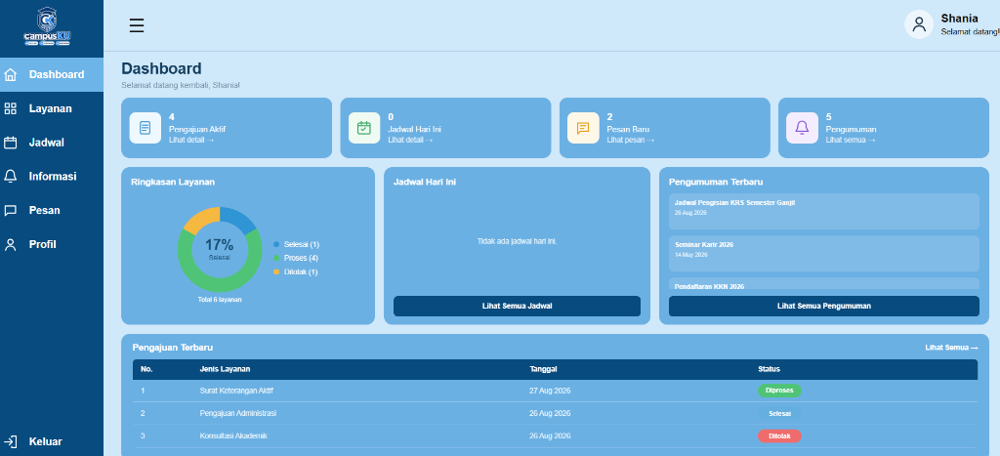
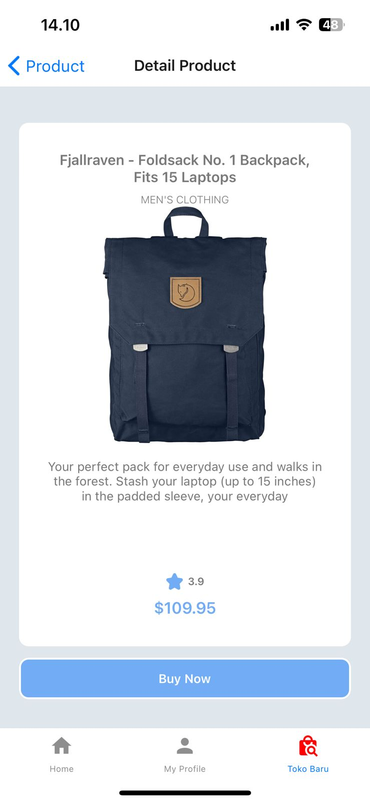
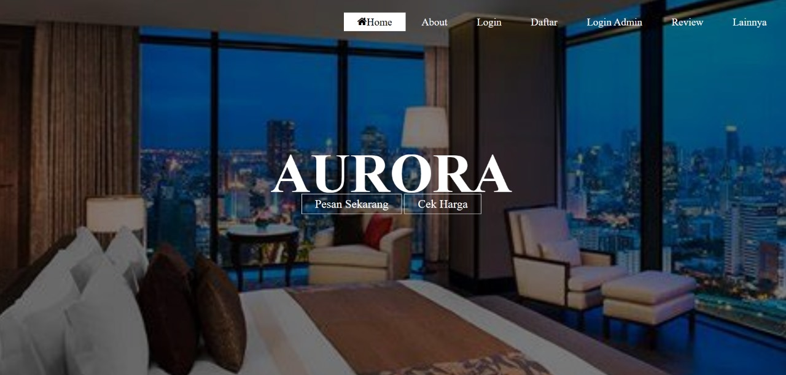
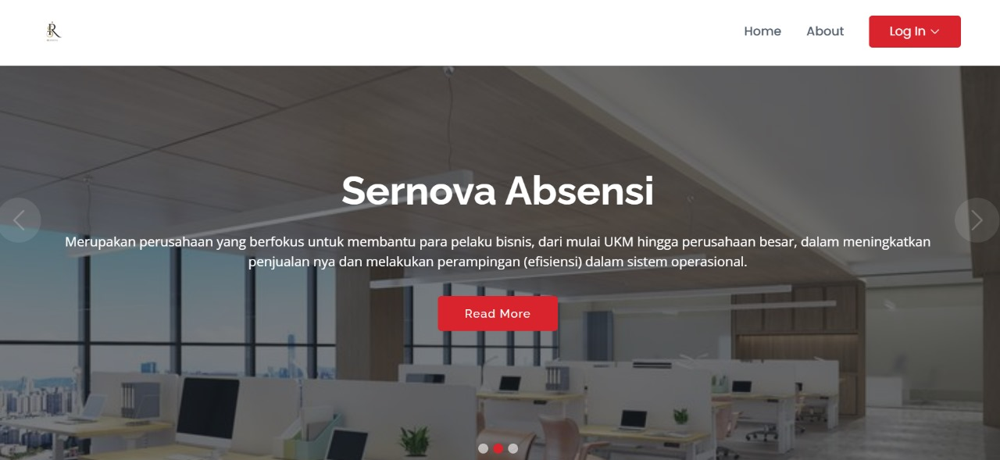

Halo, Saya Shania Ardani
Saya seorang Junior Web Developer
Lulusan S1 Teknik Informatika UPI YPTK Padang (IPK 3.71) dengan fokus pada pengembangan web (PHP, Laravel, MySQL), basis data relasional, dan sistem pendukung keputusan (Fuzzy Tsukamoto). Terbuka untuk peluang kerja on-site maupun remote.

Tentang Saya
Latar belakang akademis, pengalaman pelatihan, dan kompetensi teknis rekayasa perangkat lunak
Memiliki pemahaman mendalam mengenai siklus hidup pengembangan perangkat lunak, analisis kebutuhan sistem, perancangan basis data relasional, serta pengujian sistem. Telah menyelesaikan pelatihan intensif Web Programmer di Mediatama Web Indonesia dan berpengalaman dalam administrasi data & pengarsipan saat PKL di SDN 10 Sungai Sapih.
Terbiasa bekerja secara teliti, adaptif terhadap teknologi baru, serta siap memberikan kontribusi maksimal baik secara mandiri maupun dalam kolaborasi tim untuk posisi IT Staff / Junior Web Developer / Software Engineer.
Keahlian & Teknologi
Ringkasan kompetensi teknis, bahasa pemrograman, basis data, dan perangkat kerja
Portofolio Proyek Unggulan
Aplikasi web, sistem kecerdasan buatan (AI), dan sistem informasi yang telah saya kembangkan
- Semua Proyek
- Sistem Prediksi & AI
- Web Application
- Mobile Application

{kind=link}
Sistem Prediksi Kredit (Adira Finance)
Prediksi risiko kredit motor berbasis logika Fuzzy Tsukamoto pada Adira Finance Padang dengan modul pelaporan & cetak.

{kind=link}
CampusKU – Portal Kampus
Sistem layanan terpadu mahasiswa: pengajuan surat, bimbingan, modul percakapan/chat real-time, dan dashboard admin.

Ranah Malala – Pariwisata
Platform direktori pariwisata Sumatera Barat dibangun dengan arsitektur MVC Laravel dan integrasi repositori GitHub.

{kind=link}
Aplikasi Pembelian Busana
Prototipe aplikasi mobile e-commerce pembelian pakaian menggunakan Expo Go dengan antarmuka katalog produk interaktif.

{kind=link}
Web Pemesanan Hotel Aurora
Sistem reservasi dan pemesanan kamar hotel online dengan modul ketersediaan kamar dan form booking tamu terpadu.

{kind=link}
Sistem Absensi Karyawan
Aplikasi web pengisian absensi harian karyawan yang dikelola langsung oleh administrator dengan rekapitulasi data.
Kontak & Informasi Rekrutmen
Saya terbuka untuk wawancara kerja, program magang, maupun penempatan posisi Web Developer & IT Staff
Lokasi & Status
Padang, Sumatera Barat
Siap On-site / Remote / Relokasi{kind=link}
{kind=link}
{kind=link}
{kind=link}
{kind=link}
{kind=link}